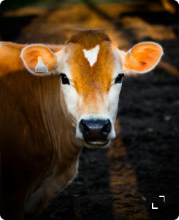

Contents
Cow
Cow, in common parlance, a domestic bovine, regardless of sex and age, usually of the species Bos taurus. In precise usage, the name is given to mature females of several large mammals, , including cattle (bovines), moose, elephants, sea lions, and whales.
Domestic cows are one of the most common farm animals around the world, and the English language has several words to describe these animals at various ages. A baby cow is called a calf. A female calf is sometimes called a heifer calf and a male a bull calf. A heifer is a female that has not had any offspring. The term usually refers to immature females; after giving birth to her first calf, however, a heifer becomes a cow. An adult male is known as a bull. Many male cattle are castrated to reduce their aggressive tendencies and make them more tractable. Young neutered males, which are primarily raised for beef, are called steers or bullocks, whereas adult neutered males, which are usually used for draft purposes, are known as oxen. A group of cows, cattle, or kine (an archaic term for more than one cow) constitutes a herd. English lacks a gender-neutral singular form, and so “cow” is used for both female individuals and all domestic bovines.
Cows are members of the order Artiodactyla. The order contains even-toed hoofed mammals, and cows have distinctive cloven hooves (derived from the toenails from the middle two digits of each foot). Cows belong to the family Bovidae (hollow-horned ruminants, which also includes antelope, sheep, and goats), subfamily Bovinae (which includes buffaloes and spiral-horned antelope), tribe Bovini (which includes cattle, bison, and yak), and genus Bos—the names of which are all derived from bos, the Latin word for cow.
The size and weight of a cow is highly dependent on the breed. Mature males weigh 450–1,800 kg (1,000–4,000 pounds) and females weigh 360–1,100 kg (800–2,400 pounds). Both males and females have horns, and although these may be short in many breeds, they can grow to be spectacularly large, such as in Texas longhorns and African Ankole-Watusi cows. Some breeds are genetically polled (hornless), and many other cows may be dehorned (that is, have their horn buds destroyed) at young age to make them easier to transport and safer to work around. Cows are renowned for their large milk-producing (mammary) glands known as udders, which possess four teats (nipples). Cows are well adapted for grazing (feeding on grass), with a wide mouth and specialized teeth for eating tough vegetation. Adults have 32 teeth but lack upper incisors and canines—they have a gummy pad instead that is used to help rip up grass. The molars have moon-shaped ridges that run parallel to the tongue, and thus chewing must be done with a circular motion to be effective The most specialized adaptation that cows (and other ruminants) have is their massive four-chambered stomach, which acts as a fermentation vat. Inside the rumen, the largest chamber of the stomach, bacteria and other microorganisms digest tough plant fibres (cellulose). To aid in this process, cows regurgitate and re-chew food multiple times before it passes on to the rest of the digestive system via the other stomach chambers. This process, called “chewing the cud,” helps sort the digesta (the material being digested) and absorb nutrients. By taking time to re-chew their food later, cows avoid the need to chew well when they eat. This enables them to quickly ingest large quantities of grass while in the vulnerable head-down position required for grazing.
Cows are currently the most common domesticated ungulate (hoofed mammal), and they are found wherever humans live. Global stocks of cows were estimated at nearly one billion animals in 2016, with India, Brazil, and China having the largest populations (together maintaining approximately one-third of all cows).
Cows were first domesticated between 8,000 and 10,000 years ago from the aurochs (B. taurus primigenius), a wild species of cattle that once ranged across Eurasia. The wild aurochs became extinct in the early 1600s, the result of overhunting and loss of habitat due to the spread of agriculture (and domestic herds). Today, there are two broadly recognized forms of cow: the zebu or humped cattle from eastern Asia (B. taurus indicus) and cattle without humps (B. taurus taurus) from western Eurasia, although the two forms readily interbreed. Genetic studies suggest that both forms descend from the aurochs, but they are the products of independent domestication events.
Cows were first domesticated as “all-purpose” animals, used as draft animals and also for their milk and meat products. Regional specializations led to the formation of a range of varieties, or breeds, that were adapted to different climates or that were selectively bred to emphasize valuable characteristics, such as milk or meat production. Cows are used by humans in many other ways, such as a source of leather for clothing and other products and, albeit controversially, as participants in sporting events (e.g., bullfighting, bull riding, and rodeo events). Cows may also serve as a measure of wealth, and they are even worshipped as sacred animals in some religions (see sanctity of the cow). Historically, northern Europeans constructed their dwellings alongside or on top of cow stables, creating “housebarns” warmed by the body heat of cows.
All mammals produce milk to feed their young, but dairy cattle, such as the well-known Holstein-Friesian cow, have been specially bred to produce very large quantities of milk. Since only females produce milk, they are far more common in the dairy industry. Dairy bulls are often large, powerful, and aggressive and are more challenging to keep. As a result, most breeding in modern dairy operations occurs through artificial insemination, with bulls living at just a few specialized facilities. Different breeds of dairy cows have been bred for specific milk characteristics, such as to maximize yield or to produce a desired level of fat in the milk. Milk from cows is a significant part of many food items; in addition to its direct consumption as a beverage, it is used to make a wide range of products including butter, yogurt, cheese, and ice cream.
Dairy cows produce milk for around 10 months following the birth of the calf. A typical western dairy cow is usually milked twice per day and produces on average 30 litres (8 gallons) of milk daily; however, the actual amount produced depends upon the age and breed of the cow. Most modern milking is not done by hand but by machines.
Cows usually have their first calf when they are just under two years old—with single calves being typical, although twins sometimes occur—and each cow may have ten or more calves over the course of her life. Even though cows can live for 20 years or more, older dairy cows are often culled from commercial herds and used for meat when their milk yield begins to decline.
The meat of adult cows is known as beef; meat from calves (typically slaughtered at three months of age) is known as veal. Beef cattle, such as the common Hereford and Aberdeen-Angus breeds, have been bred to produce muscle, not milk, and tend to be much heftier than dairy cows. Breeds of beef cattle have differing characteristics in regards to growth rate, fat content of the meat, disease resistance, and ability to handle drought. In addition to muscle meat, a variety of organs from cows—including liver, kidney, heart, brains, and various glands—are also consumed by people. Beef cows are typically farmed in less intensive systems than dairy cows, since they are not handled daily for milking.
